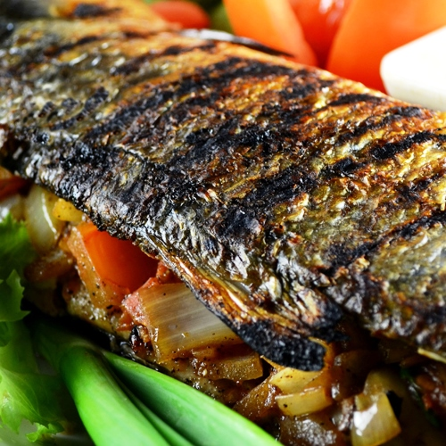

Best Filipino Recipe

Inihaw na Bangus (Grilled Milkfish)
Prep time
10 mins
Cook time
20 mins
Total time
30 mins
SERVES: 4
Ingredients
1 large milkfish (bangus), with scales but guts removed.
1 large tomato, diced.
1 large red onion, diced.
1 lemon (or 3 pieces calamansi).
1 tablespoon minced ginger.
2 teaspoons salt.
½ teaspoon ground black pepper.
Instructions:
Wash the milk fish. Pat it dry using a paper towel.
Open the incision and then rub the salt on the inside of the dish. The fish should have an incision in the belly area.
Meanwhile, combine tomato, onion, and ginger in a large bowl. Squeeze some lemon juice in and add the ground black pepper. Gently stir.
Stuff the mixture inside the milkfish.
Grill the fish in medium heat for about 10 to 12 minutes per side.
Serve with toyomansi and steamed rice.
Share and enjoy!